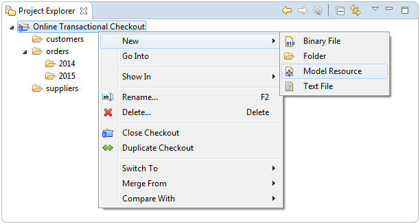
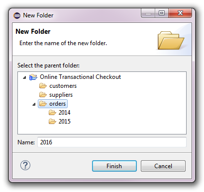
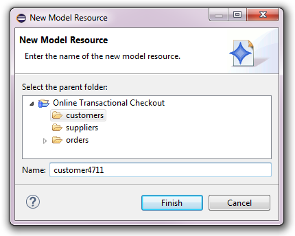
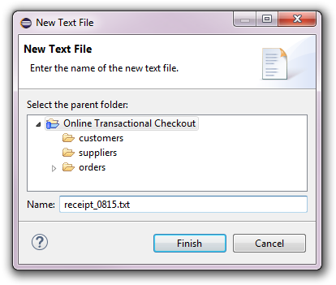
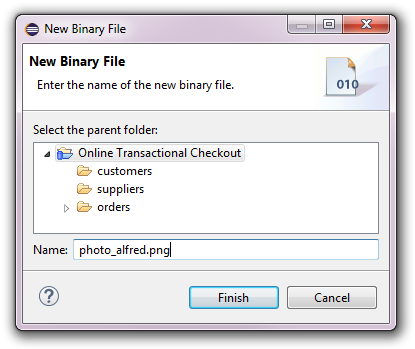
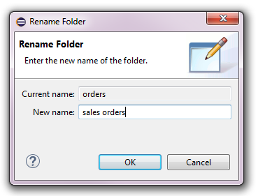
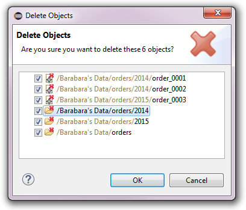

Working with Folders and Resources


Working with Folders and Resources |
|
The models of a checkout are organized in the virtual file system (aka resource tree) of a repository. This resource tree
consists of folders and different types of resources, all categorized as resource nodes.
All modifications of the resource tree that are triggered in the Project Explorer
are performed in a separate background transaction, see Technical Background of Transactions for details.
Modifying the resource tree is only possible in checkouts that are not read-only, i.e., not in Online Historical Checkouts.
Table of Contents
New resource nodes can be created directly in the Project Explorer by opening the context menu on a checkout or on an existing folder under a checkout and then opening the New sub menu:

The following sub sections describe how to create the different types of resource nodes and how to work with them.
A folder is a named container for a list of nested resource nodes.
Folders provide a means to organize and reorganize the models and files in a checkout according to any criteria that seems adequate
for their use cases.
A new folder can be created by opening the context menu on a checkout or on an existing folder under a checkout and then selecting New -> Folder. The following dialog will pop up to ask for the name of the new folder:

The name of the new folder is validated to be unique among all nested resource nodes under the container of the new folder.
A model resource is a named container for a list of nested model elements.
Model resources provide a means to organize and reorganize the model elements in a checkout according to any criteria that seems adequate
for their use cases.
A new model resource can be created by opening the context menu on a checkout or on an existing folder under a checkout and then selecting New -> Model Resource. The following dialog will pop up to ask for the name of the new model resource:

The name of the new model resource is validated to be unique among all nested resource nodes under the container of the new model resource.
A text file is a named container for a stream of text characters and the encoding
of these characters. Text files provide a means to efficiently store and retrieve unmodeled data.
A new text file can be created by opening the context menu on a checkout or on an existing folder under a checkout and then selecting New -> Text File. The following dialog will pop up to ask for the name of the new text file:

The name of the new text file is validated to be unique among all nested resource nodes under the container of the new text file.
A binary file is a named container for a stream of bytes. Binary files provide a means to efficiently store
and retrieve unmodeled data.
A new binary file can be created by opening the context menu on a checkout or on an existing folder under a checkout and then selecting New -> Binary File. The following dialog will pop up to ask for the name of the new binary file:

The name of the new binary file is validated to be unique among all nested resource nodes under the container of the new binary file.
A resource node can be renamed at any time by selecting the resource node and pressing the F2 key or opening the context menu and selecting the Rename action. The following dialog will pop up:

Renaming a resource node does not break cross references to the model elements that are contained in the model resources in or under the renamed resource node.
Resource nodes can be moved within the resource tree of a checkout by using drag and drop.
When holding the Ctrl key while dropping the resource nodes onto a checkout or a resource folder copies of the dragged resource nodes are created under the drop target.
Moving a resource node to a different folder does not break cross references to the model elements that are contained in the model resources in or under the moved resource node.
Moving and copying resource nodes beyond the current checkout with the resource transfer framework
is not yet supported for checkouts.
Resource nodes can be deleted from the resource tree of a checkout by selecting the resource node and pressing the Del key or opening the context menu and selecting the Delete action. The following confirmation dialog will pop up:

This confirmation dialog only shows the directly selected resource nodes. Nested resource nodes or model elements are not shown for performance reasons but will also be deleted if OK is pressed.
Deleting a resource node can break cross references to the model elements that are contained in the model resources in or under the deleted resource node!